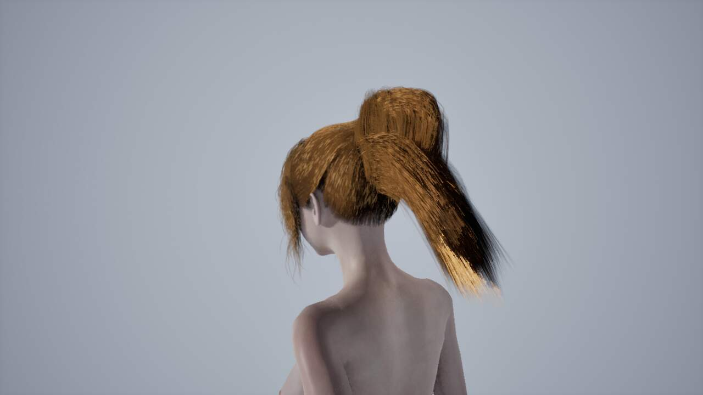
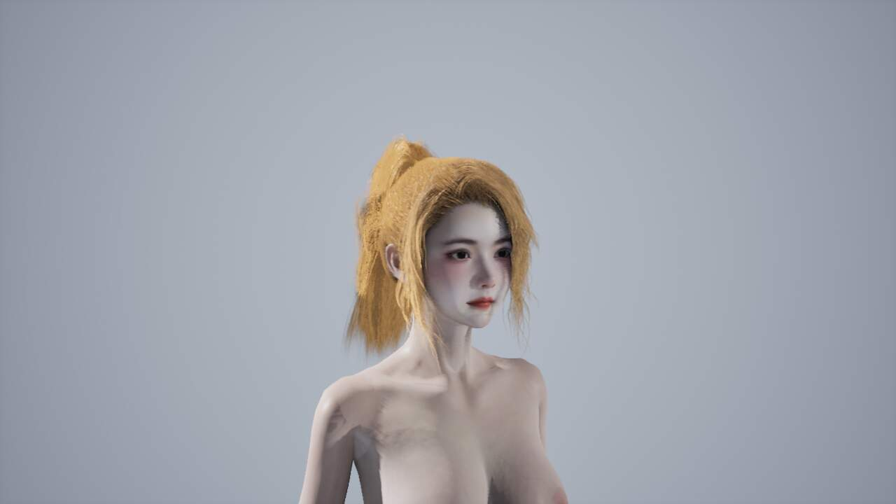
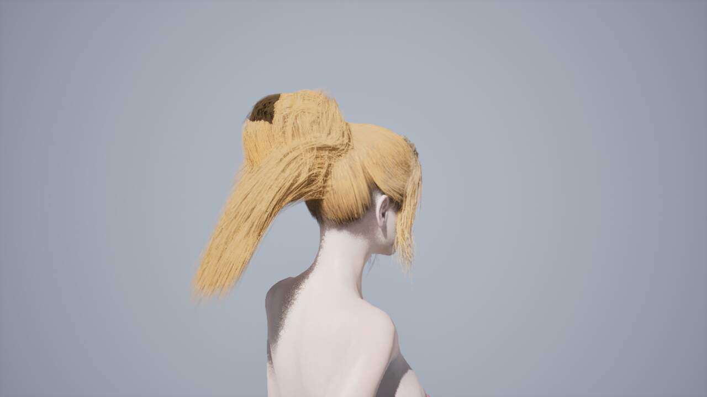
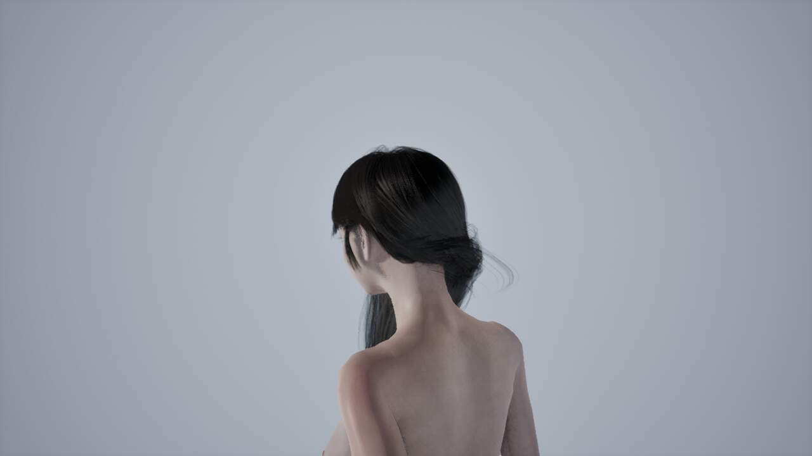
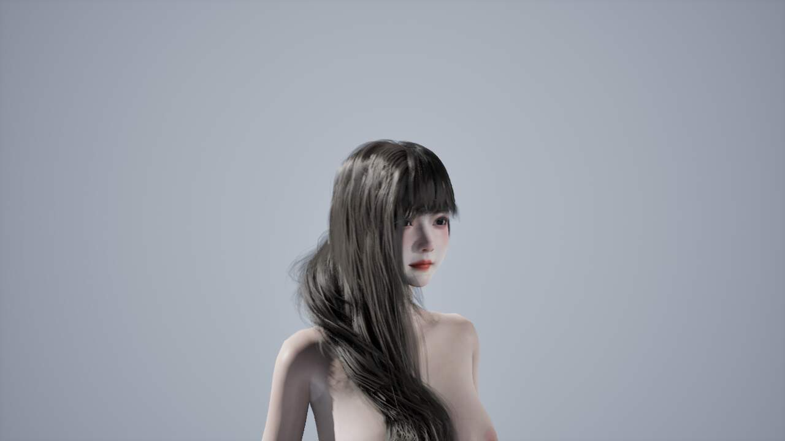
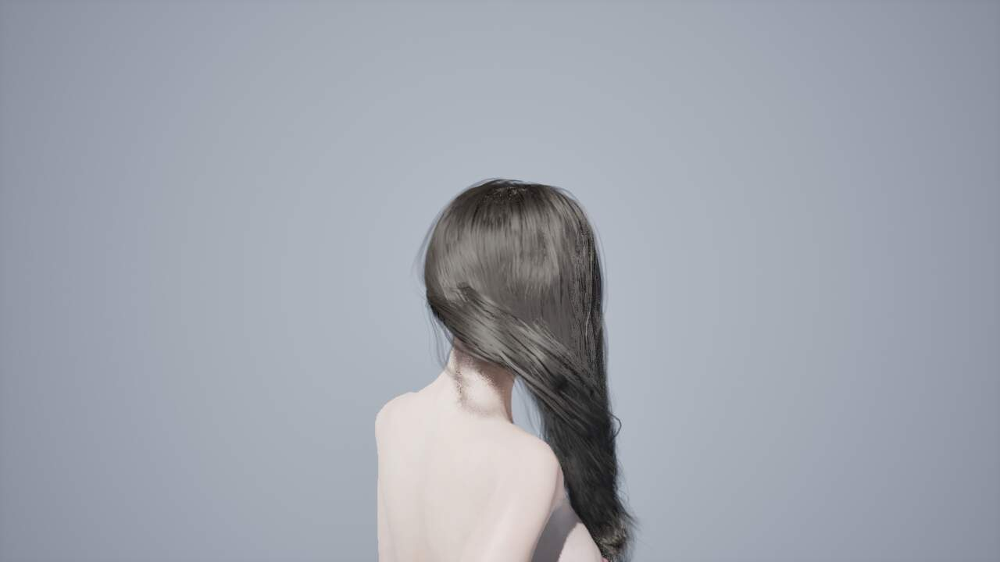
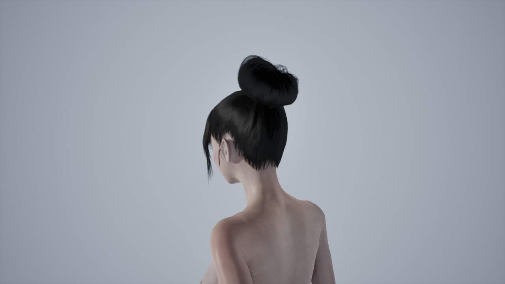
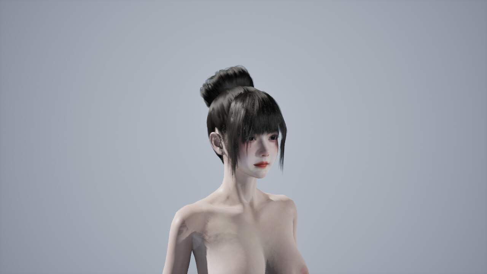
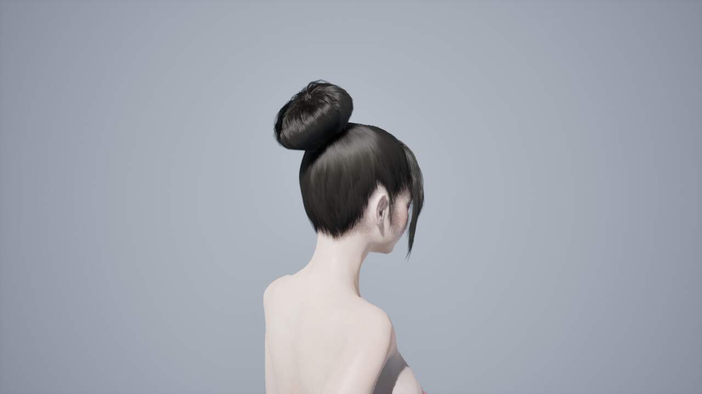

长发与马尾：通用物理链路修复
· 这轮改了什么
保留已还原的渲染曲线、宽度、头发资源和组合资产。恢复身体碰撞代理的原始体积；从可见发型覆盖采样模拟导线；按源三角发束与长度关系转移支撑；扎发的收束支撑与自由尾部分开。头发自碰撞保持关闭。
粗略档已停止生成和维护。旧序列化值兼容迁移到 Fine，新录制只有精细档。
这是经过实跑的改进版本，不是“任意发型、所有动作零穿模”的证明。 头部采样仍有残留穿入；身体球/胶囊代理统计不等同真实皮肤穿入深度。请结合下面完整视频验收轮廓、束根和运动。
· 真实运动对比
同一人物、体型和已记录骨骼运动，起步、行走、跑步、转身、急停、跳跃和下蹲。世界位移来自已有重放轨迹，不是实时 CharacterMovement 导航。相机环绕；臀腿 Jiggle 开启。视频编码 30 FPS，模拟步长 1/60 秒，编码帧率不用于性能结论。
高马尾



侧披长发



原盘发



长发补充：全身环绕
相同动作，扩大取景以检查肩背和身体接触。末帧另外导出了 A1 分层网格；该导出不能替代整段动态皮肤碰撞验证。
· 根因与换路依据
| 发现 | 处理 |
|---|---|
| 旧构建为了避开静止头发，缩小胸背等非头部代理，破坏身体覆盖 | 保留原身体 PhysicsAsset 体积，只复制为头发碰撞缓存 |
| VaM 内部控制线经过长度、分束等操作后与可见曲线不同 | 从可见曲线覆盖采样，保留源三角发束来源以转移支撑 |
| 将每条内部控制线就近替换，会重复选中少量发丝 | 撤回，改为按可见形状覆盖采样；导线预算不增加 |
| 仅用全局 bend stiffness 无法表达扎点和发髻 | 逐节点源支撑、源连接的稀疏近似，加上有源连接和几何收束证据的扎点支撑 |
| 空间距离插值实拍让扎束变差 | 撤回，使用 UE 高质量形状搜索与 Parametric 插值 |
源点支撑和稀疏连接是对 VaM 数据语义的适配，不是逐帧等价复刻 VaM 求解器。扎点识别是基于源连接、支撑和几何收束的通用启发式，不含发型名称分支；对尚未覆盖的特殊造型仍需要回归。
· 实测性能
RTX 4070 Ti / i5-12600KF，1920×1080，单人物，无截图、无 GPU 审计读回；hair off → fine → off，每段预热 180 帧、测量 300 帧。基准使用根节点摇摆与转向，不是 24 秒录像整段的无录屏帧率。数值是整个测试场景帧时间，增量包含头发渲染和求解，并非孤立 GPU solver 时间。
| 发型 | 精细平均帧时间 / FPS | P95 | 头发总增量 | 前后空载漂移 |
|---|---|---|---|---|
| 高马尾 | 7.69 ms / 130.0 FPS | 9.65 ms | 1.58 ms | 0.31 ms |
| 侧披长发 | 7.81 ms / 128.0 FPS | 9.53 ms | 2.12 ms | 0.41 ms |
| 原盘发 | 7.84 ms / 127.6 FPS | 10.54 ms | 2.05 ms | 0.47 ms |
· 实际运行与证据
三套新身份均独立进程重载。正常 BP_VamCharacter 完成 Editor 挂接/激活检查、24 秒 Game 运动，以及 6 秒 PIE 重放。PIE 短片不冒充完整 24 秒 PIE 验证。所有采样的头发自碰撞 viscosity 为 0。相关 Python 回归 29 项通过；UE 模块已实际编译并安装，最终 C++ 构建见 compile-07.log。
[资产身份与 BP 路径](identities.json)。各发型目录保存 bundle、Editor、PIE、性能和逐帧运动指标。Python 回归测试、编译日志和未采用试验保存在 Saved/HairGeneric，未覆盖历史发型。
实现提交：6937218（单档迁移）、7fe0075（导线覆盖、源支撑和完整身体代理），均已推送 feature/hair。新角色资产独立生成，未自动替换当前关卡中的角色。[编译日志](compile-07.log) / [29 项测试日志](unit-tests.log)。
E2 · 未隐藏的碰撞残留
以下对照均取 0、2、8、12、16、20、23 秒，覆盖相同的起步、跑步、跳跃和下蹲片段。使用同一 A1 头部表面、相同采样方法；排除发根前 10%，统计最终渲染发丝，不只是模拟导线。这不是全身动态皮肤验收，也不是每根发丝每一帧的穷举。
| 发型 | 头部内部深度峰值（旧 → 新） | 单次采样超过 2 mm 的点数峰值（旧 → 新） |
|---|---|---|
| 高马尾 | 6.975 → 1.189 cm | 256 → 19 |
| 侧披长发 | 2.482 → 1.772 cm | 147 → 26 |
长发另外按新版本完整身体代理重新评估了历史发丝，保证没有拿旧的缩小代理作弊：渲染点的代理重叠峰值约 13.23 → 5.03 cm，超过 2 mm 的采样点峰值 1218 → 246。残余 5.03 cm 是胶囊/球并集重叠，不能解释为真实皮肤穿入 5.03 cm，也不能当成已解决。 全身视角用于补充视觉核查。
目前仍有少量脸部/头部穿入，且代理不能覆盖所有精细身体轮廓；本轮改善了基础导线、支撑与身体输入，但没有宣称碰撞问题彻底清零。Rigged Guides / Deformer Graph 是后续复杂扎发的一条独立备选，不应继续只提高迭代次数。
· 参考与适用边界
- Epic Groom 导入：Generated / Imported / Rigged Guides：本轮采用从可见曲线构造导线的方向，保留本项目的源支撑转移。
- Epic Hair Art Directability 与 Content Examples：骨骼驱动导线是复杂扎发的另一条路线，本轮没有宣称已接入它。
- Netrunner 实际制作中的身体碰撞修复：检查 Groom 的身体碰撞组件来源。当前实现已具备身体输入；本项目额外的问题是缩小了代理。
- SideFX：卷发、辫发与 UE Groom 工作流：复杂造型需要保留分束结构，不能只靠提高整体刚度。
- Holding the Shape in Hair Simulation，SIGGRAPH 2019：形状支撑与自由运动需要分别表达。
VaM 依据来自用户本地原版运行时数据、点支撑与 NearbyDistanceJoints 调用逻辑。没有将源 NearbyJointPower=0 的保留编辑数据误启用，也没有把源数据中的未使用 Gravity 字段当成有效重力。